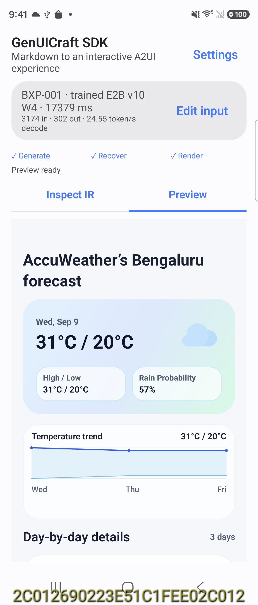
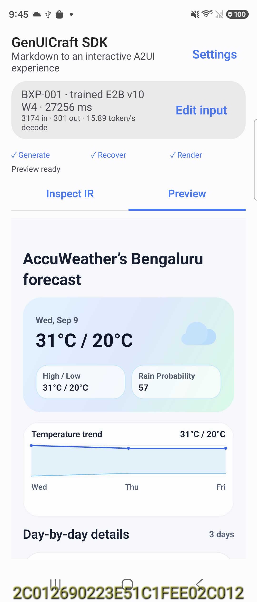

BXP-001 · Weather
MTP off
Decode 24.55 tok/s · Wall 17,321 ms · Raw strict True · Screen confirmed True
raw output · screen · scrolled screen · source



Full raw output
<a2ui>
$/={forecast_data:[{date:"Wed, Sep 9",high:"31",low:"20",rain:"57%"},{date:"Thu, Sep 10",high:"30",low:"21",rain:"55%"},{date:"Fri, Sep 11",high:"30",low:"21",rain:"55%"}]}
root=Column([a,b,c,d,e],gap="md",padding=16)
a=Text("AccuWeather’s Bengaluru forecast","h2")
b=Table(columns=[{key:"date",label:"Date"},{key:"high",label:"High (°C)"},{key:"low",label:"Low (°C)"},{key:"rain",label:"Rain probability"}],statePath="/forecast_data",domain="weather",preferredPresentation="cards",primaryColumn="date",numericColumns=["high","low"])
c=Text("Cloudy or sunny-interval conditions through the next three days, with the highest rain chance on Wednesday and continued shower/thunderstorm potential on Thursday and Friday.","caption")
d=Text("Carry an umbrella or light rain jacket, especially for afternoon and evening plans.","chip")
e=Text("Plan outdoor activities earlier in the day, when conditions are more likely to stay drier and slightly cooler.","chip")
</a2ui>MTP on
Decode 15.89 tok/s · Wall 27,184 ms · Raw strict True · Screen confirmed True
raw output · screen · scrolled screen · source



Full raw output
<a2ui>
$/={forecast_data:[{date:"Wed, Sep 9",high:31,low:20,rain:57},{date:"Thu, Sep 10",high:30,low:21,rain:55},{date:"Fri, Sep 11",high:30,low:21,rain:55}]}
root=Column([a,b,c,d,e],gap="md",padding=16)
a=Text("AccuWeather’s Bengaluru forecast","h2")
b=Table(columns=[{key:"date",label:"Date"},{key:"high",label:"High (°C)"},{key:"low",label:"Low (°C)"},{key:"rain",label:"Rain probability"}],statePath="/forecast_data",domain="weather",preferredPresentation="cards",primaryColumn="date",numericColumns=["high","low","rain"])
c=Text("Cloudy or sunny-interval conditions through the next three days, with the highest rain chance on Wednesday and continued shower/thunderstorm potential on Thursday and Friday.","caption")
d=Text("Carry an umbrella or light rain jacket, especially for afternoon and evening plans.","chip")
e=Text("Plan outdoor activities earlier in the day, when conditions are more likely to stay drier and slightly cooler.","chip")
</a2ui>